homotopy pushout of a single cofibration for a left proper model category
Proposition
Let $(\mathcal{C}, \mathcal{W}, \mathrm{Cof}, \mathrm{Fib})$ be a left proper model category and

a pushout diagram, where $A \hookrightarrow B$ is a cofibration
Then the diagram is also a homotopy pushout
Proof
a)
(todo)
b)
use a cofibrant replacement & natural transformation of a cofibrant replacement functor, which induces a morphism between the pushouts
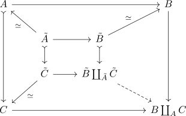
(note that the morphism $\tilde{B} \rightarrow \tilde{B} \coprod_{\tilde{A}} \tilde{C}$) is a cofibration as cofibrations get mirrored by pushouts)
We may assume - up to weak equivalence - that $\tilde{A} \rightarrow \tilde{C}$ is a cofibration, since we may factor
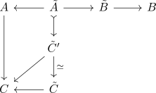
Then
Consider the pushout
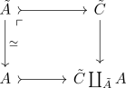
(note that the cofibration gets mirrored, cf. cofibrations as saturated set) which fits into
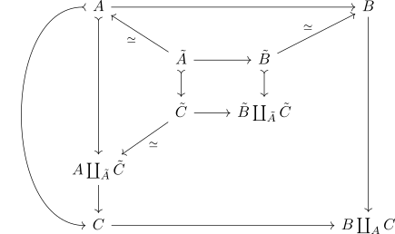
Here the map
is a weak equivalence since the model category is left proper
Denote
Then by two out of three for weak equivalences
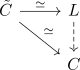
we may conclude that the dashed map is a weak equivalence.
Now consider the pushout
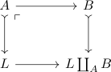
which fits
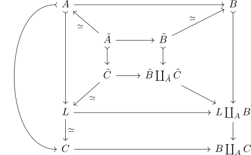
Then
is a weak equivalence (cf. homotopy colimit invariant under natural weak equivalence)
it remains to show that $L \coprod_A B \rightarrow B \coprod_A C$ is a weak equivalence
Furthermore by the Window lemma for pushouts it follows that the bottom square
is a pushout.
Then choose a factorization of $A \rightarrow B$ as cofibration followed by weak equivalence
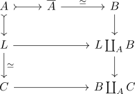
and take the pushouts
note that every rectangle here is a pushout (pushout window / glueing lemma for pushouts)
then the maps are cofibrations (as they are mirrored by pushouts)
and then by left properness the following maps are weak equivalences
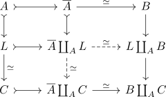
where the bottom left morphism is a weak equivalence by left properness of
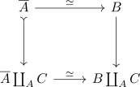
Then by two out of three for
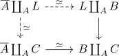
we finally conclude, that $B $L \coprod_A B $\rightarrow B \coprod_A C$ is a weak equivalence